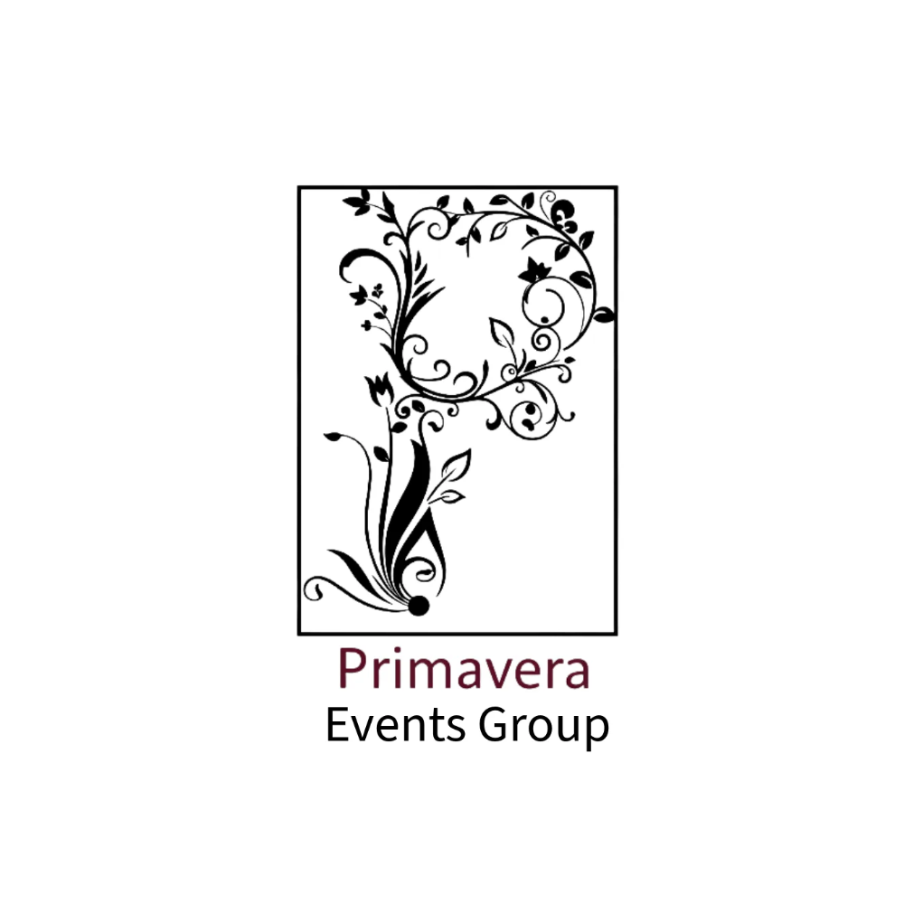

Coordinadora de eventos con experiencia comprobada en la supervisión, logística y ejecución operativa de bodas, XV años y eventos corporativos. Mi trabajo es convertir la visión del Wedding Planner en una experiencia impecable: gestiono proveedores, mantengo el timeline bajo control y resuelvo imprevistos con calma y decisión. He trabajado en los venues más reconocidos de Morelos y tengo experiencia en entornos de servicio internacional en Estados Unidos.
El planner piensa, diseña y vende. Yo ejecuto, superviso y mantengo el flujo operativo. Soy el puente entre la visión creativa y la realidad del evento: el punto de contacto con proveedores, el ojo en cada detalle del montaje y la garantía de que todo suceda exactamente como se planeó.
Coordinación operativa integral de bodas, XV años y eventos corporativos en uno de los venues más emblemáticos y relevantes del área. Supervisión del montaje y desmontaje, control del timeline durante el evento y gestión del staff. Punto de contacto principal entre el venue, los wedding planners externos y los clientes — garantizando que cada operación refleje fielmente la visión del planner.

Ejecución operativa en eventos de alto perfil. Elaboración de escaletas y timelines, seguimiento de proveedores y supervisión on-site del montaje. Trabajo estrecho con el equipo de planeación para garantizar que cada detalle operativo estuviera alineado con la propuesta creativa del planner y la expectativa del cliente.
Atención y bienvenida de clientes en un entorno internacional de alto volumen. Gestión del flujo de invitados, control de reservaciones y asistencia en eventos privados. Experiencia que consolidó el inglés conversacional en contexto real, el manejo de clientes exigentes bajo presión y los estándares de servicio internacionales.